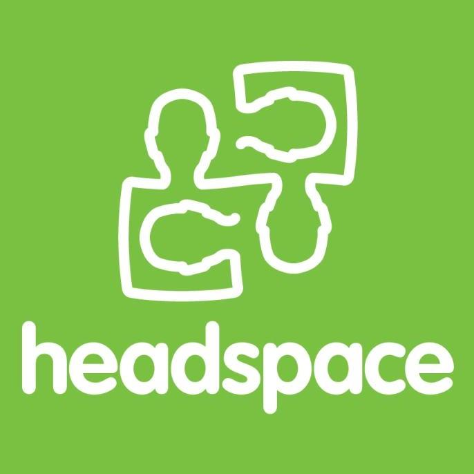
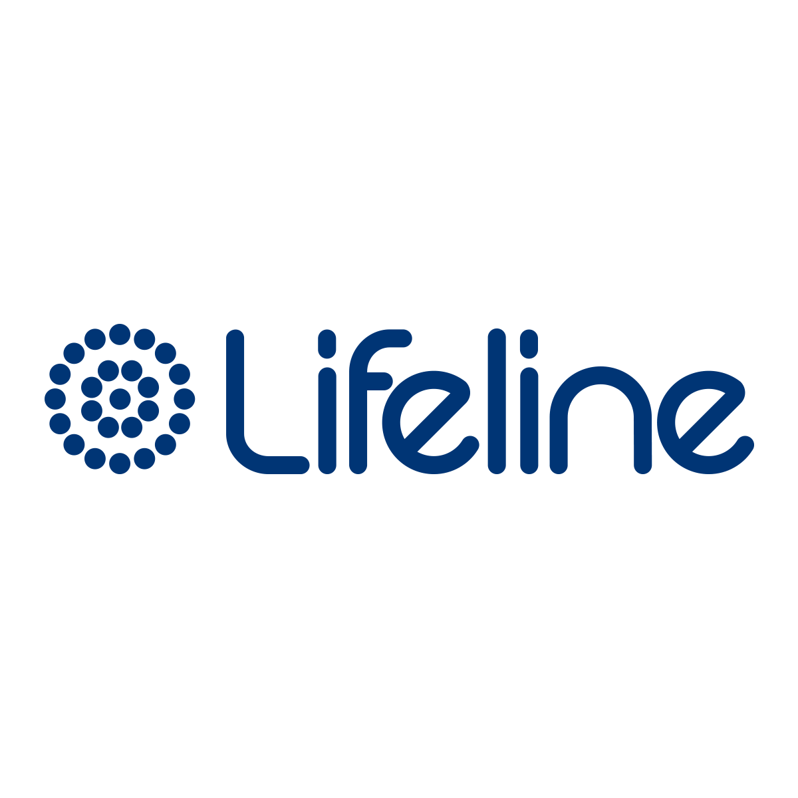
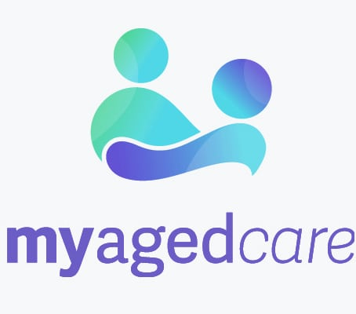

Young Persons
(15 to 24 years old)
General
The onset of mental illness is typically around mid-to-late adolescence, and Australian youth have the highest prevalence of mental illness than any other age group.
According to the Australian Institute of Health and Welfare in 2020, they estimated that 26% of these individuals is likely to have experienced symptoms of mental disorder in a one-year study period alone.
There are multiple factors that cause these struggles. Factors that contribute to stress include a desire for greater autonomy, pressure to conform with peers, exploration of sexual identity, and increased access to and use of technology. The environment and society that these individuals are currently growing up in can also exacerbate their current struggles.
Common Types of Struggles
Depression
One in seven Australians will experience depression in their lifetime. It has the third highest burden of all diseases in Australia (13%).
Burden of disease refers to the total impact of a disease measured by financial cost, mortality, morbidity and other indicators.
They commonly emerge during adolescence. Besides depression or anxiety, adolescents with emotional disorders can also experience excessive irritability, frustration or anger.
Anxiety Disorders
For individuals over 15 years old, anxiety disorders are prevalent - they affect up to 14.4% of the Australian population. This also includes social anxiety, which are most common amongst individuals in this age group.
Other examples of anxiety disorders include Generalised Anxiety Disorder, Obsessive-Compulsive Disorder, Panic Disorder and Post-Traumatic Stress Disorder.
Suicide and Self-Harm
In Australia, at least six australians die from suicide and a further thirty people will attempt to take their own life. It is currently the second leading cause of death for young people in the 15-24 year old age group.
Bipolar Disorders
Bipolar I disorder happens when a person experiences oscillating manic (extreme ‘highs’, often with psychotic features) and depressive episodes. Bipolar II disorder is when the person experiences oscillating hypomanic (less severe ‘highs’ with no psychotic features) and depressive episodes. The onset of bipolar disorders starts from mid to late adolescence.
Eating Disorders
For Australians aged 15 and over, an estimated 4-16% of the population has or had struggled with eating disorders. The estimated figure may vary according to the type of disorder researched and the given time period of study.
The four common types of disorders include:
anorexia nervosa (persistent restriction of food or water intake), bulimia nervosa (repeated episodes of binge eating followed by compensatory behaviours like self-induced vomiting or laxative misuse), binge eating disorder (repeated episodes of binge-eating) and other unspecified feeding or eating disorders.
How to Overcome Them
Sleep
According to the U.S. National Sleep Foundation, the optimal amount of sleep is between 7 to 10 hours everyday for this age group.
Changing behaviours can help to improve sleep. They include a regular bedtime and wake time, practising mindfulness and meditation before bed, restriction from technology use and avoiding late-night food stimulants.
Exercise
Australian guidelines recommend adults do at least 30 minutes of moderate to intensive physical activity on most or all days of the week. You can make up 30 minutes over the day by combining shorter 10 to 15 minute sessions.
Walk your dog! Do a sport or go to the gym! Take a walk (or run) down to the grocery store! Go shopping! Go put yourself out there.
Find Information
Wherever you may be, you are not alone. Find the information you need to empower yourself. Read about others' stories and how they thrived through; look up figures and know that others are in this together with you; follow advocates on their social media pages to catch snippets of their reality.
Knowledge gives you power. With that power, you will be stronger.
Seek Help
Whether you are feeling anxious, out of your skin or bad about your image, it is important that you seek the right help that you need. Reach out to a community that will listen to you; reach out to professionals who can give you the best advice; and reach out into yourself, because only you know what is the best for you.
Consider non-profit organisations, counsellors, nutritionists and even friends and family. It may be difficult to speak about your truth at first, but be open and truthful to yourself. You may realise that that is the best thing you can do for youself.
Who to Approach
Black Dog Institute
The Black Dog Institute provides a myriad of resources for you to learn - not just the struggles themselves, but also how to manage them when the need arises. It is also a world leader in the diagnosis, treatment and prevention of mood disorders such as depression and bipolar disorder.
headspace
 headspace is an online platform by the National Youth Mental Health Foundation that offers tailored and holistic mental health support services to 12 to 25 years old specifically. headspace has centres in 124 communities across Australia, online and phone counselling services, vocational services and established presence in schools.
batyr
 batyr is a mental health organisation created and driven by young people, for young people. It aims to encourage youths to be engaged in positive conversations about mental health, and to reach out for support when needed. It aims to engage, educate and empower the young, and that starts from the premise of school.
batyr is a mental health organisation created and driven by young people, for young people. It aims to encourage youths to be engaged in positive conversations about mental health, and to reach out for support when needed. It aims to engage, educate and empower the young, and that starts from the premise of school.
Middle-Aged
(45 to 54 years old)
General
Known as the 'sandwich generation', the individuals in this age group face immense pressure in providing for others. They are typically men and women in their 40s, 50s and 60s, who may be helping support teenage children or children in their 20s and 30s who are still living at home.
More than half of the Australian population - 53% or 12.5 million people - are aged between 25 and 64.
In summary, they are needed to provide for younger children and ageing parents in the family ageing parents. Sometimes, this also includes partners and their families.
Common Types of Struggles
Anxiety Disorders
Individuals in the sandwich generation do feel anxious when they struggle to find balance between work, caring for older family members, raising the young and taking time for themselves. This is especially so in the turbulent economic climate.
Women are more likely than men to have experienced anxiety disorders, and the highest rate is present in this age group.
It is common for both men and women to feel responsible for the emotional and financial support to their peers, and this may lead them to neglect their own sense of self.
Perhaps a big reason why we care for others is because it adds a greater purpose to our lives. We want to make the life of someone we love better, and this brings us pride and satisfaction. However, this may often lead to the dismissal of our own needs.
Substance Abuse
Alcohol and drug abuse cases are common among individuals in this age group.
Alcohol was the most common principal drug of concern for a client's own drug use in 36% of all closed treatment episodes in 2018-19. In 2019, people in their 50s (21% of their population) are most likely to exceed lifetime risk guidelines of alcohol consumption.
Cannabis is the most widely-used illicit drug in Australia. In 2019, Australian Institute of Health and Welfare reported that 49.4% of the people between 40 to 49 years old have a lifetime use of this drug.
Men are more than twice as likely as women to have substance use disorders (11 percent compared to 4 percent).
Biological Factors
Changes in hormones and chemistry, as well as these individuals' genes, affect their state of mind greatly.
Women experience menopause, and it can have effects on mental health. During menopause, there is a depletion of estrogen - a hormone that is produced during a women's fertile periods. Without it, it can cause drastic mood changes and emotional distress. This also includes potential relapses or changes to preexisting symptoms of mental illness.
Men are no exception to hormonal changes too. Andropause, refers to the drop in testosterone production in men who are age 50 and older. Even though not all men experience it, it is still capable of causing physical, sexual and psychological problems among those who do. They can include depression or sadness, lowered self-confidence and insomnia or difficulty sleeping. The prolonging of these symptoms can cause greater psychological harm.
Low Self-Esteem
Because of lack of self-care that is common amongst these individuals, it is common that their physical health and body image will take a toll too.
A common reason that these individuals have cited when it comes to lacking self care, is that they do not have enough time to care for themselves. Often, finding a physical and mental space for themselves, that is free from distractions, can also be difficult.
Hence, without the space and capacity to look after themselves, many individuals compensate their stress for other tangible consumerables, whether in food or other substances, leading to increased weight gain. This is alongside a slowing metabolism and a less robust immune system.
Psychologically, it may be difficult to feel secure about the work that they are doing. This does not refer to work in the office alone, but also in their role as caregivers to the older and younger generation. Often, if things do not fall to plan, they may question their decisions, and this can lead to negative outlooks on their circumstances.
How to Overcome Them
Exercise
While intensive workouts such as High-Intensity Interval Training (HIIT) may not be the best for your joints, you can still look into slower-moving workouts such as yoga and swimming.
The benefits of physical activity are not just psychological, but physical too. It reduces the risk of illnesses like heart and lung disase, high blood pressure, dementia, cancer and more. It helps you to lose weight, which is good for your self-esteem too.
Whether it is going for a slow walk in the park or doing the weekly groceries, being out of the house and spending these small moments by yourself can greatly improve your mental health in the long run.
Healthy Dieting
The simplest start to live happily and healthily, is to eat healthily. Your body changes as you get older, and a balanced diet not only affects your external physique, but also the chemicals produced in your body.
As a general guideline, eat food that is rich in fibre to help you with your digeation; eat iron-rich food to maintain your energy levels; eat food that is calcium-rich to build and maintain your bones. Eat less of unnatural sugars and salts, and ensure you have sufficient vitamins circulating in your body!
Share Feelings
Perhaps speaking about your feelings may not be something you've been used to. As a primary caretaker, you may think you ought to be motionally strong to support your peers. Perhaps this may have even resulted in becoming quiet and reclusive about your emotions.
That is not true. There is reason as to why people speak with counsellors - they want to speak openly about their emotions, struggles and thoughts. Sometimes, they wish to receive direction, to want to be in a better position to care for themselves. All these, starts with the will to articulate, to find the proper vocabulary to speak their truth. This takes practice, but the first step to feeling better, is to voice out your struggles, so that you can fully feel and comprehend them. Along the way, you may even find a friend or two to guide you on your journey.
Seek Help
While on your journey to understand yourself and to recover, it is good that you find people whom you can trust - not just to be here for you emotionally, but also advise you rationally on the ways forward. It is always important to know that it takes courage and strength to admit that you do need support, and the next step is to find people who can do that for you.
Sometimes, seeking help may also mean taking yourself away from the space or people who will cause you more harm than good - and that is okay. It may be people who you should be close to, but don't feel guilty for that. At the end of the day, do what is best for yourself. When you are happy and safe with yourself, nothing can truly upset you. Take responsibility for yourself - at least for the time being. You should come first.
Who to Approach
healthdirect
healthdirect is a national, government-owned, not-for-profit organisation that prioritises providing free, trusted health information and advice, 24 hours a day, 7 days a week. This online platform has plentiful statistics, articles and advice on how to manage mental health across all backgrounds.
Lifeline
 Lifeline is a national national charity providing all Australians experiencing emotional distress with access to 24 hour crisis support and suicide prevention services. They are for anyone experiencing a personal crisis, and they are open to anonymous calls and chats online.
My Aged Care
 Initiated by the Australian Government Department of Health, My Aged Care aims to make it easier for older people, their families, and carers to find information on ageing and aged care in Australia. They provide online information and trained call centre staff to help you get an older person’s needs assessed and to find and access services.